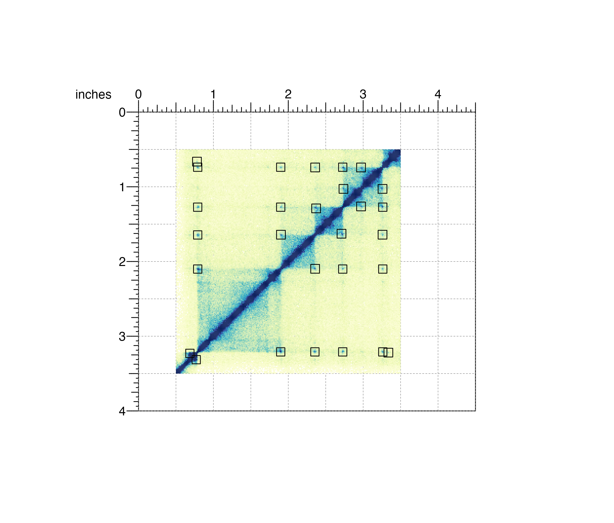
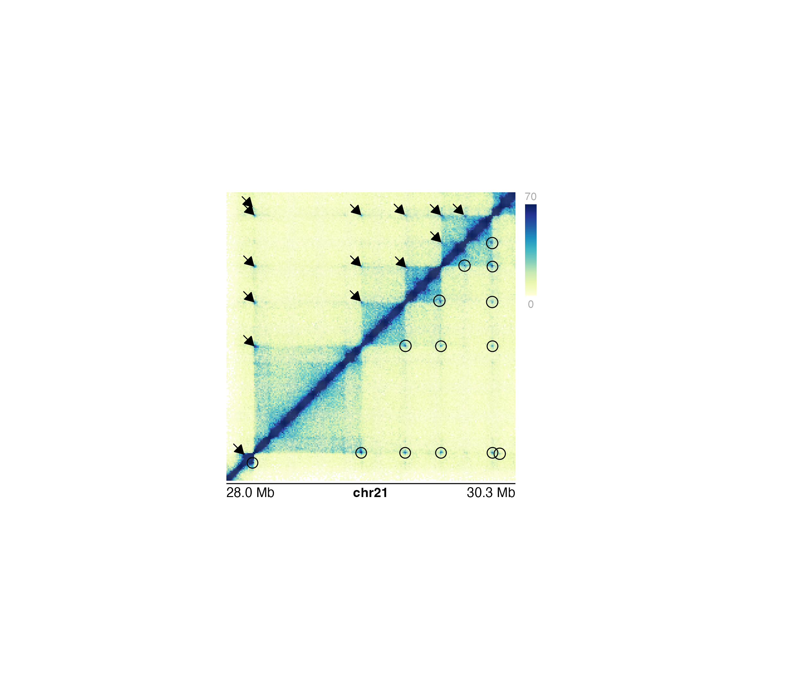

Annotate pixels in a Hi-C plot
annoPixels(
plot,
data,
type = "box",
half = "inherit",
shift = 4,
params = NULL,
quiet = FALSE,
...
)Hi-C plot object from plotHicSquare or
plotHicTriangle on which to annotate pixels.
A string specifying the BEDPE file path, a dataframe in BEDPE format specifying pixel positions, or a GInteractions object specifying pixel positions.
Character value specifying type of annotation.
Default value is type = "box". Options are:
"box": Boxes are drawn around each pixel.
"circle": Circles are drawn around each pixel.
"arrow": Arrows are drawn pointing to each pixel.
Character value specifying which half of hic plots
to annotate. Triangle Hi-C plots will always default to the entirety of
the triangular plot. Default value is half = "inherit". Options are:
"inherit": Pixels will be annotated on the half
inherited by the input Hi-C plot.
"both": Pixels will be annotated on both halves of the
diagonal of a square Hi-C plot.
"top": Pixels will be annotated on the upper diagonal
half of a square Hi-C plot.
"bottom": Pixels will be annotated on the bottom diagonal
half of a square Hi-C plot.
Numeric specifying the number of pixels on either end of main pixel in a box or circle. Numeric specifying number of pixels for the length of an arrow.
An optional pgParams object containing relevant function parameters.
A logical indicating whether or not to print messages.
Additional grid graphical parameters. See gpar.
Returns a pixel object containing relevant
genomic region, placement, and grob information.
## Load Hi-C data and BEDPE data
library(plotgardenerData)
data("IMR90_HiC_10kb")
data("IMR90_DNAloops_pairs")
## Create page
pageCreate(width = 4.5, height = 4, default.units = "inches")
## Plot and place a square Hi-C plot
hicPlot <- plotHicSquare(
data = IMR90_HiC_10kb, resolution = 10000,
zrange = c(0, 70),
chrom = "chr21",
chromstart = 28000000, chromend = 30300000,
assembly = "hg19",
x = 0.5, y = 0.5, width = 3, height = 3,
just = c("left", "top"),
default.units = "inches"
)
#> Read in dataframe. Assuming 'chrom' in column1 and 'altchrom' in column2. 10000 BP resolution detected.
#> hicSquare[hicSquare1]
## Annotate loops of both sides of Hi-C plot with squares
pixels <- annoPixels(
plot = hicPlot, data = IMR90_DNAloops_pairs, type = "box",
half = "both"
)
#> pixel[pixel1]

## Annotate loops on one side of Hi-C plot with arrows
## and the other side with circles
pagePlotRemove(plot = pixels)
pixels1 <- annoPixels(
plot = hicPlot, data = IMR90_DNAloops_pairs,
type = "arrow", half = "top", shift = 8
)
#> pixel[pixel1]
pixels2 <- annoPixels(
plot = hicPlot, data = IMR90_DNAloops_pairs,
type = "circle", half = "bottom"
)
#> pixel[pixel2]
## Annotate heatmap legend
annoHeatmapLegend(
plot = hicPlot,
x = 3.6, y = 0.5, width = 0.12, height = 1.2,
just = c("left", "top"), default.units = "inches"
)
#> heatmapLegend[heatmapLegend1]
## Annotate genome label
annoGenomeLabel(
plot = hicPlot, x = 0.5, y = 3.53, scale = "Mb",
just = c("left", "top")
)
#> genomeLabel[genomeLabel1]
## Hide page guides
pageGuideHide()
